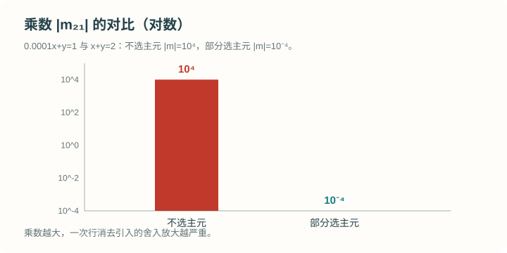
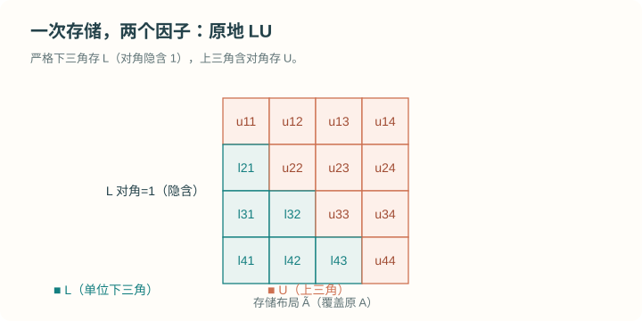

CHAPTER 15 · NUMERICAL ANALYSIS
Gauss 消去法与 LU 分解：一次消去，多次求解
求解 Ax=b 最经典的直接法就是 Gauss 消去。但同一套消去步骤若能在多个右端项之间复用，就能把 O(n³) 的分解与 O(n²) 的求解分开。本章讲清消去的代价、小主元为何危险，以及 LU 与 PA=LU 如何把“复用”变成工程上的标准做法。
01 · 求解 Ax=b 的代价与复用
Gauss 消去分两步：前向消去把增广矩阵 [A|b] 化为上三角，回代再自下而上求 x。对 n×n 稠密矩阵，前向消去约需 2n³/3 次浮点运算，回代约 n² 次：
当 n=1000 时，消去阶段约需 6.7×10⁸ 次运算（教学测算）。真正的机会在于：消去步骤只依赖矩阵 A，与右端项 b 无关。如果把消去过程存下来，同一矩阵换一个 b 就只需 O(n²) 的回代。这就是 LU 分解的动机。
02 · 为什么必须选主元
第 k 步消去用乘数 m_{ik}=a_{ik}^{(k)}/a_{kk}^{(k)}。若主元 a_{kk} 很小，乘数就会巨大，一次行消去把舍入误差放大罞倍。看一个能在三位有效数字下重现的例子：
0.0001x + y = 1 与 x + y = 2。精确解约为 x=1.0001, y=0.9999。
不选主元时 |m₂₁| = 1/0.0001 = 10⁴，消去后回代求 x 要算 1−y，两位相近数相减发生灾难性抵消，再除以很小的主元，误差被放大，x 只剩一位有效数字。若做部分选主元：先在第 k 列的对角线以下找绝对值最大的元素，与第 k 行交换。这样就能保证
同一例选主元后 |m₂₁| = 10⁻⁴，不再放大误差，三位精度下回代得到 x≈1.00（正确到三位），而不选主元得到 x=0。注意：选主元不能保证结果绝对准确（误差还取决于增长因子），但在绝大多数情况下它把风险降到可控范围。

|m₂₁| 的对比（对数坐标）：不选主元达 10⁴，部分选主元降至 10⁻⁴。乘数越大，一次消去引入的舍入放大越严重。03 · LU 分解：Doolittle 与 Crout
把消去过程记为矩阵乘积，就得到 A=LU：L 是下三角，U 是上三角。不同风格只在“哪个三角的对角元限定为 1”上不同。Doolittle 取 L 对角元为 1，直接对应 Gauss 消去，公式为
关键观察：算 U 第 k 行、L 第 k 列时，用到的 l 与 u 都已在前面算好，因此可以原地覆盖原矩阵 A——下三角存 L、上三角含对角存 U，L 的对角 1 不必存。图 2 给出存储布局。
| 分解 | L 对角元 | U 对角元 | 特点 |
|---|---|---|---|
| Doolittle | 全为 1 | 任意 | 最常用，直接由 Gauss 消去导出 |
| Crout | 任意 | 全为 1 | 适合三对角等带状矩阵 |
| Cholesky | 平方根 | L 的转置 | 仅用于对称正定矩阵（第 16 章） |

n² 存储空间同时容纳 L（严格下三角）与 U（上三角含对角）；L 的对角元隐含为 1，不需存储。04 · PA = LU：把行交换写进分解
带部分选主元的消去会在过程中交换行。把这些交换记为置换矩阵 P，整体分解写成
求解 Ax=b 时，先对 b 施加同样的行交换得 Pb，再解 Ly=Pb（前向替换）与 Ux=y（回代）。置换矩阵 P 只记录“哪一行去了哪里”，本身不引入舍入。几乎所有库函数（如 SciPy 的 lu_factor）默认采用部分选主元。
05 · 应用：多右端项与求逆
LU 分解的价值在于一次分解、多次回代：
- 多右端项：系数矩阵不变、右端项变化时（如结构分析中反复施加不同载荷），只需一次
O(n³)分解，之后每个b仅需O(n²)。 - 求逆：解
n个方程组Axⱼ=eⱼ（eⱼ为单位基向量），一次分解加n次回代即可得到A⁻¹的所有列。
| 任务 | 每次直接用消去 | 一次 LU + 回代 |
|---|---|---|
| 单个右端项 | O(2n³/3) | O(2n³/3) + O(n²) |
| m 个右端项 | m·O(2n³/3) | O(2n³/3) + m·O(n²) |
| 求逆 | n·O(2n³/3) | O(2n³/3) + n·O(n²) |
当 m 或 n 很大时，存下分解结果相比“每个右端项重算一次”能省下大量运算。不过实际工程中求逆往往不是好选择——直接用分解回代比显式求逆更稳定、更省。
06 · 实验与失败边界
用“三位有效数字”模拟低精度算术，就能重现选主元前后的巨大差异。同一个方程组，只是先交换两行，解就从完全失真变回正确。
import math
def round_sig(x, s=3): # 保留 s 位有效数字
if x == 0:
return 0.0
d = math.ceil(math.log10(abs(x)))
f = 10 ** (s - d)
return round(x * f) / f
def solve_2x2(A, b, s=3): # 三位有效数字下的消去 + 回代
m = round_sig(A[1][0] / A[0][0], s)
a22 = round_sig(A[1][1] - m * A[0][1], s)
b2 = round_sig(b[1] - m * b[0], s)
x2 = round_sig(b2 / a22, s)
x1 = round_sig((b[0] - A[0][1] * x2) / A[0][0], s)
return x1, x2
nopiv = solve_2x2([[0.0001, 1], [1, 1]], [1, 2])
piv = solve_2x2([[1, 1], [0.0001, 1]], [2, 1]) # 先交换两行
assert abs(nopiv[0] - 1.0001) > 0.5 # 不选主元：x1 完全失真
assert abs(piv[0] - 1.0001) < 0.01 # 选主元：正确到三位
print(nopiv, piv)失败边界。部分选主元并不消除所有风险：消去中元素可能增长，最坏情况下增长因子可达 2ⁿ⁻¹，误差界因此包含该因子（实际中极少发生）。若矩阵本身病态，直接法的解误差仍约为 κ(A)·ε，这是问题条件数带来的，不是算法缺陷。若主元全为零，则矩阵奇异或秩缺。
原始资料与延伸阅读
本章将文献结论与本文独立构造的数值示例严格区分；代价估计与图示为教学演示。
- SciPy · scipy.linalg.lu_factor：基于 LAPACK 的部分选主元 LU 分解接口。
- E. Anderson et al., LAPACK Users' Guide。SIAM，第三版，1999；直接法求解器的算法与选主元策略。
- Nicholas J. Higham, Accuracy and Stability of Numerical Algorithms。SIAM 第二版，2002；LU 分解的误差分析与增长因子。